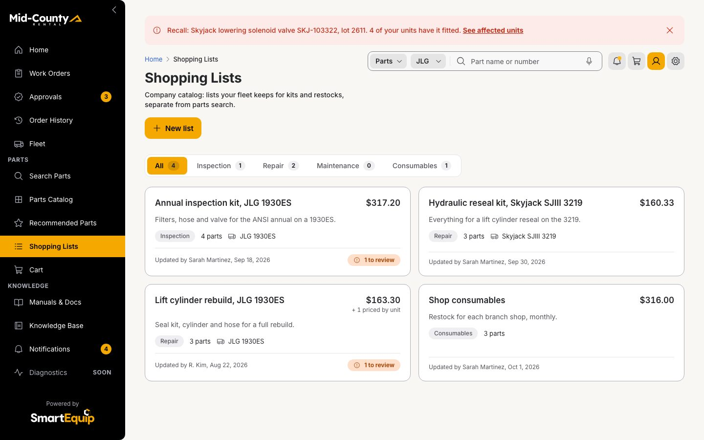
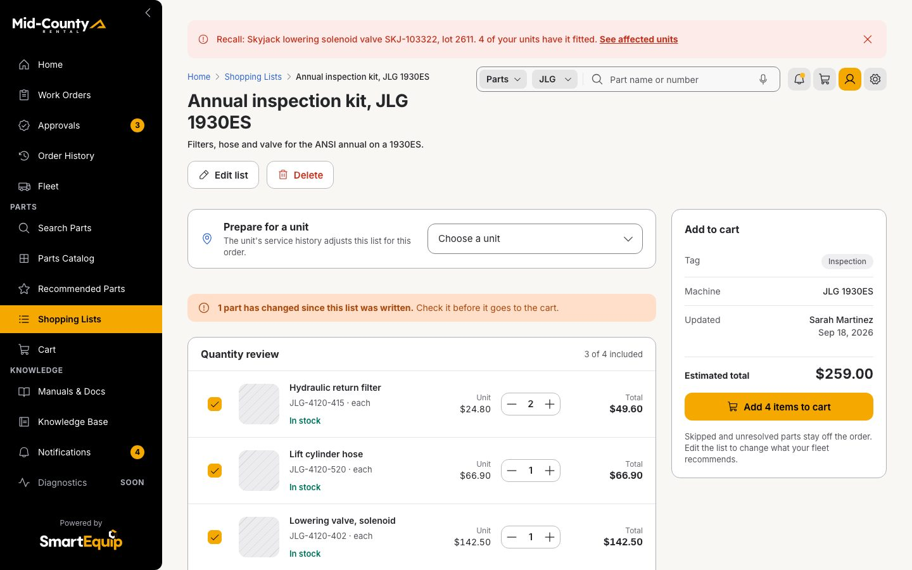
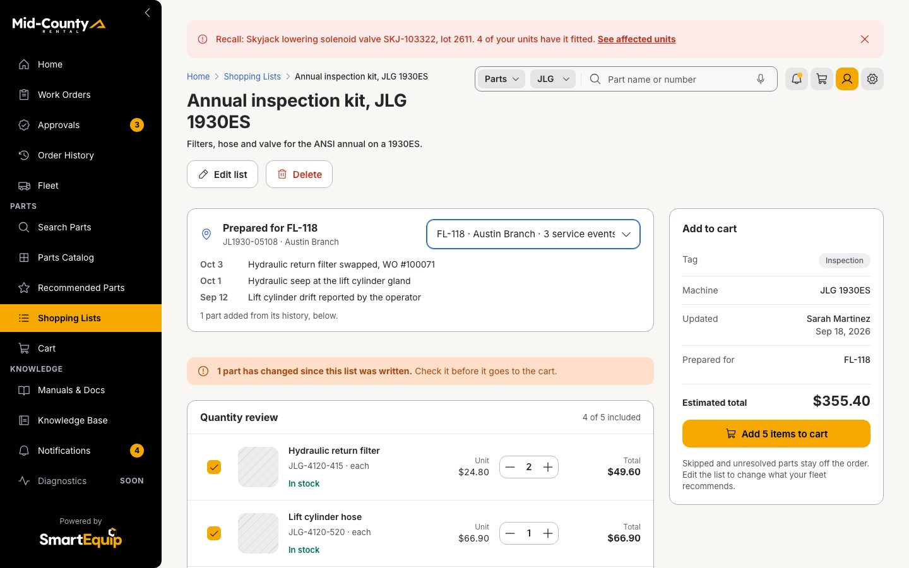
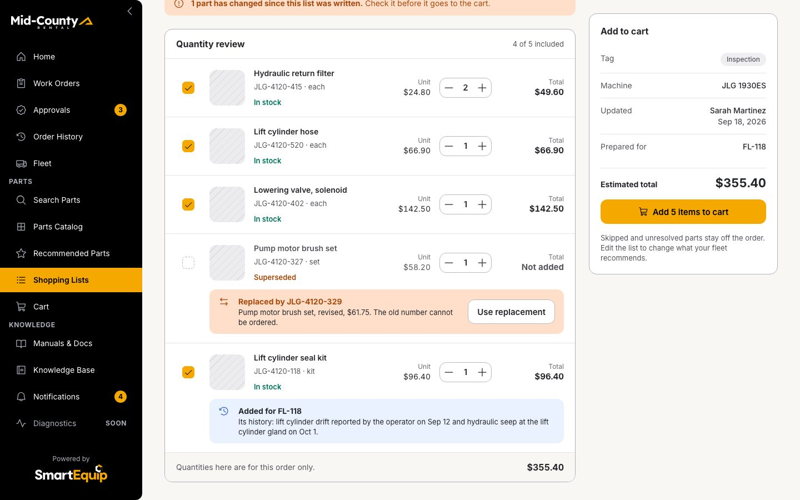
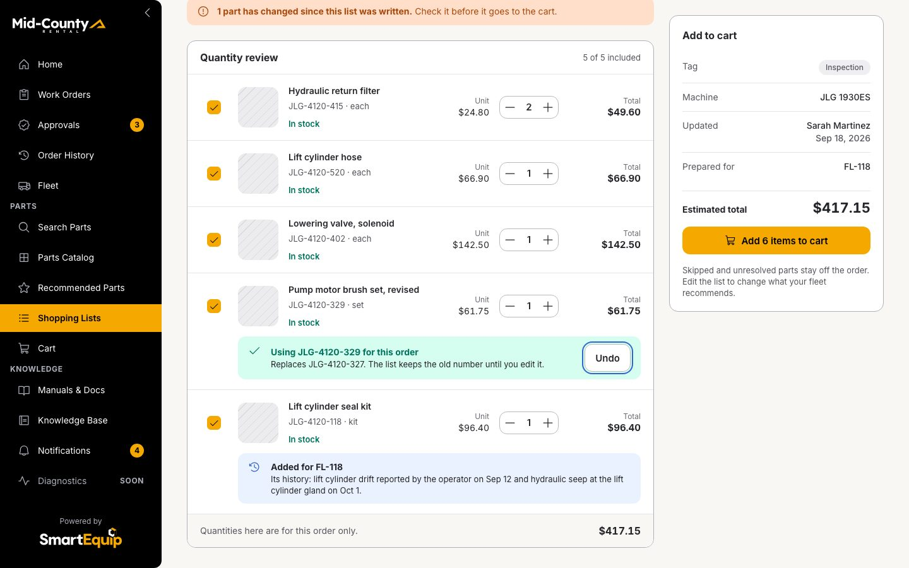
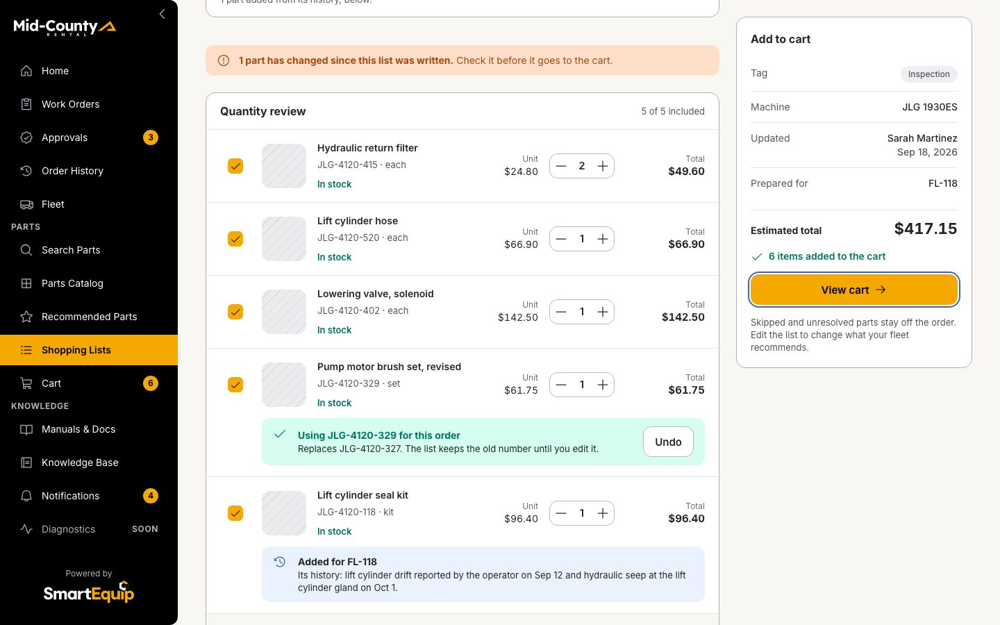
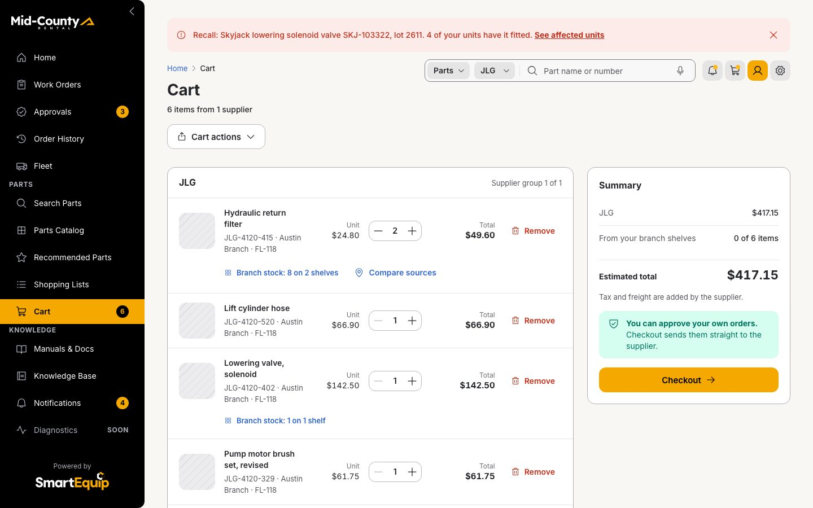

1 · Outcome
A shopping list is a template; the unit's own service history adjusts it, so the parts it will need travel in the same trip.
driver and patternbusiness objectoutcome
2 · Storyboard
Every step as the browser showed it once the step had settled, in 3 phases. Click a frame for full size.
Choose the template

Open Shopping Lists from the rail
Click · Shopping lists
Open the annual inspection kit: the template for the ANSI annual
Click · Shopping list


Adjust it to the unit

Prepare it for FL-118: it has service history
Choose · Shopping list
Its history: drift, then a seep at the lift cylinder
Look · Shopping list
So the kit adds a lift cylinder seal kit, with the reason
Look · Shopping list
The brush set was replaced: use its successor
Click · Shopping list


Order the kit

Add every included part for FL-118 in 1 action
Click · Shopping list
View the cart: 1 trip, no $5 gasket left behind
Click · Cart


3 · Swimlane
Who does what, step by step: the supervisor's action, the screen it lands on, the rules the screen ran in the shared contracts and the records that changed.
supervisor stepscreen or rulerecord createdrecord changed
4 · Business objects
What the walkthrough reads, derives and writes, with the values of this run. Arrows read left to right.
readderived by a rulewrittenrisk
- Fleet unit FL-118 → Service history, FL-118: history
- Shopping list (template) → Kit for the unit: template
- Service history, FL-118 → Kit for the unit: adds 1
- Kit for the unit → 5 cart lines: Add all
- Kit for the unit → Reason on the added line: reason
5 · The rule
How the template becomes a kit for 1 unit: every history event and what the rule did with it.
| Template part | Qty | Status in the kit |
|---|---|---|
| JLG-4120-415 Hydraulic return filter | 2 | included |
| JLG-4120-520 Lift cylinder hose | 1 | included |
| JLG-4120-402 Lowering valve, solenoid | 1 | included |
| JLG-4120-327 Pump motor brush set | 1 | replaced: use JLG-4120-329 |
| History date | Event | Part | Kit rule |
|---|---|---|---|
| Sep 12, 2026 | Lift cylinder drift reported by the operator | JLG-4120-118 | not in the list: added |
| Oct 1, 2026 | Hydraulic seep at the lift cylinder gland | JLG-4120-118 | not in the list: added |
| Oct 3, 2026 | Hydraulic return filter swapped, WO #100071 | no part named: kept as history |
Result: 1 part added (JLG-4120-118), 0 flagged as already included. Every addition carries its reason on the line.
6 · State timeline
What the session held after each step: the records a reviewer can check in the prototype.
| Step | Action | Screen | Rules | Changed |
|---|---|---|---|---|
| 1 | Click: Open Shopping Lists from the rail | Shopping lists | ||
| 2 | Click: Open the annual inspection kit: the template for the ANSI annual | Shopping list | ||
| 3 | Choose: Prepare it for FL-118: it has service history | Shopping list | Search context set; Adjust the kit to the unit | Search context: FL-118, JL1930-05108, 1930ES |
| 4 | Look: Its history: drift, then a seep at the lift cylinder | Shopping list | ||
| 5 | Look: So the kit adds a lift cylinder seal kit, with the reason | Shopping list | ||
| 6 | Click: The brush set was replaced: use its successor | Shopping list | ||
| 7 | Click: Add every included part for FL-118 in 1 action | Shopping list | Add to cart; Add to cart; Add to cart; Add to cart | 5 cart lines: JLG-4120-415 × 2, FL-118 to Austin Branch; JLG-4120-520 × 1, FL-118 to Austin Branch; JLG-4120-402 × 1, FL-118 to Austin Branch; JLG-4120-329 × 1, FL-118 to Austin Branch; JLG-4120-118 × 1, FL-118 to Austin Branch |
| 8 | Click: View the cart: 1 trip, no $5 gasket left behind | Cart | Check the cart lines; Cost every source; Cost every source; Cost every source |
Drawn from the walkthrough as it played in this folder on 2026-10-27: the frames are the screens it showed, the values are what the rules returned and what the session recorded. Regenerate with node _src/value-diagrams.mjs.